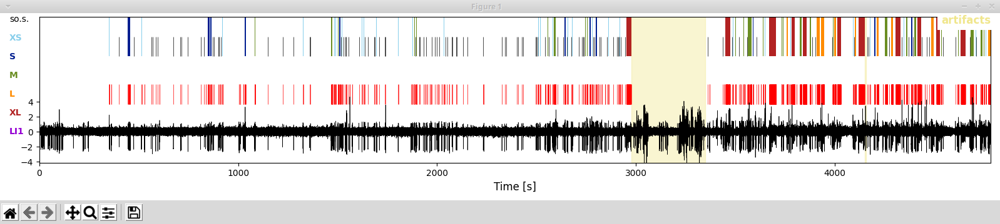
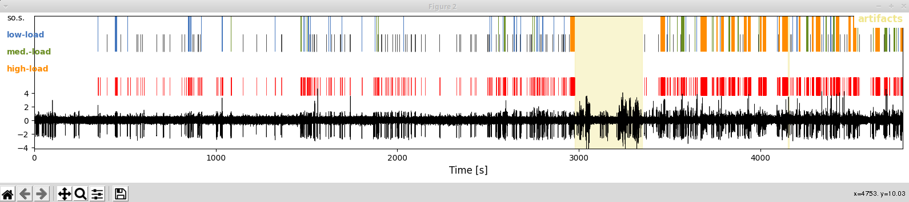
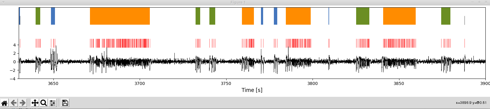

Accessing results
Here is how to use the modules and scripts that allow you to conveniently access and visualize the results stored during analyses in the main output hdf5-file. We provide access tools for both Python and Matlab, but note that the access through Python provides more advanced features.
Python
Setting things up
Make sure that you are in the virtual environment for PEACOC (in case you decided to use one):
> workon peacoc
For me, the command line now looks like this:
(peacoc) weltgeischt@heulsuse:~/PEACOC_tutorial$
Navigate into the directory of PEACOC:
> cd PEACOC
I am now in (pwd for showing the current directory):
> pwd
/home/weltgeischt/PEACOC_tutorial/PEACOC
Start python or ipython:
> ipython
From within python, we first import some useful modules:
Initialize recording object
There are two ways to initialize a recording object and thereby gain access to the data. First, you can initialize a recording object with its parameter file.
Alternatively, you could initialize it directly with the results file results file. If you want to plot colorful bursts, this option also requires you to give the path to the SOM.
Note
If you dislike objects and want to extract the data directly from the hdf5 file, you are allowed to skip ahead.
Visualize EA sequences
Now let’s plot the LFP and the EA we detected:
In the resulting plot you see the LFP trace (bottom), all spikes detected (middle, red ticks), and the sequence of bursts (top colored according to category) and solitary spikes (black ticks). The part of the LFP that we annotated as artifact was disregarded for analyses and is shown in a yellow shade:
{kind=link}
In this representation you see t-shirt size categorization which allow for a finer distinction that the one given in the paper_. XS and S bursts correspond to low-load bursts, M bursts are medium-load bursts, and XL and L bursts correspond to high-load bursts. In this representation bursts with a spike load index = 1 (LI1) are marked in purple (technically these are also XL bursts).
If you prefer the more compact, load-based categorizations (as in the papers) you can switch the naming scheme and coloring by executing:
As you can see when plotting now, colors and cluster identity are now given in the load scheme:
{kind=link}
Accessing the results (examples)
The recording object provides a convenient access to everything that was analyzed:
You can directy extract the spiketimes and e.g. calculate the overall spike rate from it:
Our recording object contains a list of burst objects, that is the bursts that happend during the recording:
Each burst object has a start and stop point in time (.start,`.stop`), a duration (.dur), a category (.cname), a color (.color, useful for plotting), a listing of its constituent spikes (.spiketimes), a spike load index (.si) and a few other properties.
You can collect burst objects of a certain type and perform computations on them. Let’s e.g. collect high-load bursts and calculate their rate:
Similarly we can also calculate the absolute time spent in high-load bursts and the fraction of time spent in high-load bursts:
You can also address EA-free snippets as objects, in a way very similar to bursts:
If you want to concentrate your analysis on a particular cutout of data you can do so too. The cutout can then be analysed and visualized in the same way as a the whole recording
{kind=link}
Directly extract data from hdf5
You can also directly extract the data directly from the main results file. If you want to operate with data-arrays directly this might be a more efficient solution. In the following, datapath refers to the path of the main results file.
As you have seen, you can get out a lot from the data. Happy hacking and exploring!
Matlab
Accessing the results in matlab is very similar to accessing them in python (e.g. aRec.spiketimes for getting the spiketrain, see previous section). Have a look at the example in PEACOC/examples/matlab/use_matlab.m. As some of the fancier features (e.g. plotting) are not developed yet, you are very welcome to expand the reader for matlab access at PEACOC/examples/matlab/READEA.m.